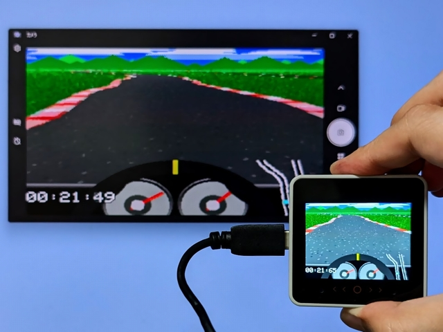
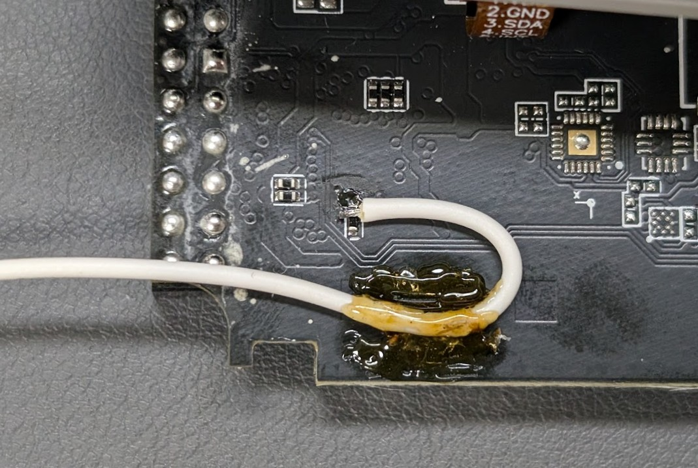

Configuration for M5Stack CoreS3

See also: LcdTap: M5Stack CoreS3 の画面をミラーリング/キャプチャする
Accessing the Chip Select Signal
The M5Stack CoreS3 does not have the CS signal exposed on the connector, so one of the following solutions is required.
Method1: Route CS signal to M-Bus
Requires modifying M5GFX.cpp and recompiling, but no
hardware modification is needed.
void cs_control(bool flg) override
{
lgfx::Panel_ILI9342::cs_control(flg);
+ // GPIO5 を CS ピンに連動させる
+ lgfx::pinMode(GPIO_NUM_5, lgfx::pin_mode_t::output);
+ if (flg) {
+ lgfx::gpio_hi(GPIO_NUM_5);
+ } else {
+ lgfx::gpio_lo(GPIO_NUM_5);
+ }
// CS操作時にGPIO35の役割を切り替える (MISO or D/C);
// FSPIQ_IN_IDX==FSPI MISO / SIG_GPIO_OUT_IDX==GPIO OUT
// *(volatile uint32_t*)GPIO_FUNC35_OUT_SEL_CFG_REG = flg ? FSPIQ_OUT_IDX : SIG_GPIO_OUT_IDX;
// CS HIGHの場合はGPIO出力を無効化し、MISO入力として機能させる。
// CS LOW の場合はGPIO出力を有効化し、D/Cとして機能させる。
*(volatile uint32_t*)( flg
? GPIO_ENABLE1_W1TC_REG
: GPIO_ENABLE1_W1TS_REG
) = 1u << (GPIO_NUM_35 & 31);
}
Method2: Wire directly
Wire directly to R49 on the back of the board: Hardware modification is required, but no software changes are needed.

Using LcdTap-Pico2 Universal
Connection
| LcdTap (Pico2) | Connection |
|---|---|
| GND | CoreS3’s GND |
| GPIO0 (RST) | Pico2’s 3V3 |
| GPIO1 (CS) | (See above instructions) |
| GPIO2 (SCLK) | CoreS3’s SPI_SCLK |
| GPIO3 (MOSI) | CoreS3’s SPI_MOSI |
| GPIO4 (DC) | CoreS3’s SPI_MISO |
Configuration
Load preset for M5Stack CoreS3.
Using LcdTap-Pico2 for ST7789
Connection
| LcdTap (Pico2) | Connection |
|---|---|
| GND | CoreS3’s GND |
| GPIO0 (RST) | 3V3 |
| GPIO1 (CS) | (See above instructions) |
| GPIO2 (SCLK) | CoreS3’s SPI_SCLK |
| GPIO3 (MOSI) | CoreS3’s SPI_MOSI |
| GPIO4 (DC) | CoreS3’s SPI_MISO |
| GPIO20 (CFG_OUT_720P) | Select according to your display |
| GPIO21 (CFG_LCD_SIZE_SEL) | GND (320x240) |
| GPIO22 (CFG_SWAP_RB) | GND (swap R/B) |
| GPIO26 (CFG_INVERTED) | GND (inverted) |
| GPIO27/28 (CFG_ROT[1:0]) | Open or 3V3 (0°) |